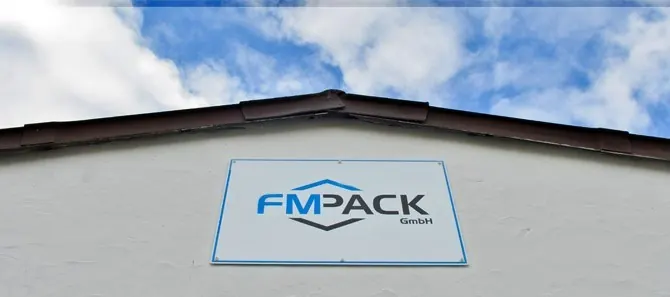

Dienstleister im LebensmittelbereichFM-Pack GmbH · Neuburg an der Donau
Lohnherstellung mit langjährigen Mitarbeitern, hoher Fertigungssicherheit und einem Qualitätssystem, das alle im Haus leben.

Teil der Wertschöpfung unserer Kunden.
Als Dienstleister sind wir unseren Kunden in besonderer Weise verbunden. Mit langjährigen Mitarbeitern und viel Erfahrung in der Herstellung von Lebensmitteln und Verbrauchsgütern führen wir Projekte effizient, kostengünstig und mit hoher Qualität durch.
- Hohe FertigungssicherheitSeit vielen Jahren gewährleistet, Auftrag für Auftrag
- Mehr als ein DienstleisterWir fühlen uns als Teil der gesamten Prozesskette unserer Kunden
- Langjährige MitarbeiterErfahrung in der Herstellung von Lebensmitteln und Verbrauchsgütern
Qualität, Betreuung, Zuverlässigkeit.
Das sind die drei Dinge, die Kunden an FM-Pack schätzen und die wir jeden Tag einlösen.
Qualität
Produktsicherheit nach IFS Food, Hygiene in jedem Schritt, geprüft von unabhängiger Stelle.
Betreuung
Ein Ansprechpartner vom ersten Gespräch bis zur laufenden Serie: Frank Marsch persönlich.
Zuverlässigkeit
Termine und Mengen, auf die Sie sich verlassen können, auch bei schwierigen Produkten.
Aus einer Idee ein Produkt entwickeln, das ist unser Alltag.
Viele Themen der Produktentwicklung übernehmen wir gern für Sie.
Was wir auf dem Weg zum Produkt übernehmen.
Ihr Gesprächspartner.

Von der ersten Frage bis zur laufenden Serie sprechen Sie mit ihm: über Ihr Produkt, die passende Technik und den Weg vom Muster zur Produktion.
Neuburg an der Donau, zwischen Ingolstadt und Augsburg.
Direkt an der Donau, gut erreichbar aus München, Nürnberg und Regensburg. Unsere Kunden sitzen in ganz Deutschland.

Lernen wir uns kennen.
Ein Anruf oder eine kurze Nachricht genügt. Frank Marsch meldet sich persönlich.
- 01Anfrage per Formular, Mail oder Telefon
- 02Gespräch über Produkt, Menge und Verpackung
- 03Erste Muster, dann die Serie